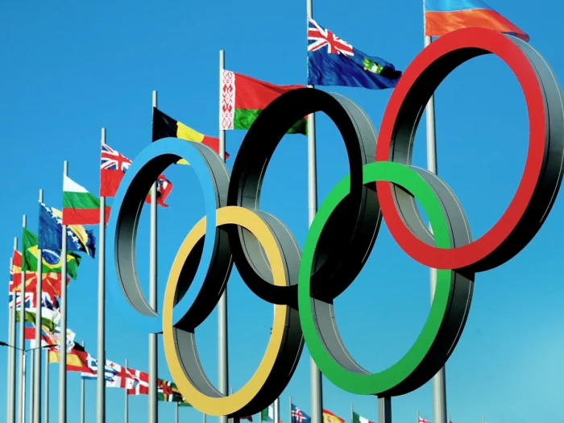
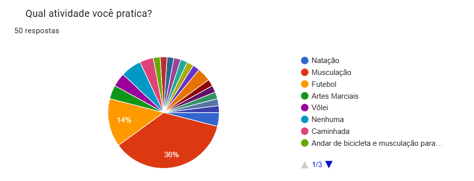

Movimente-se para uma vida mais saudável
O esporte como ferramenta para uma vida mais longa e feliz.
Os esportes oferecem diversos benefícios físicos e mentais. Eles melhoram a resistência cardiovascular, a força muscular e a flexibilidade, além de contribuírem para a coordenação motora e o equilíbrio. Em nível mental, a prática regular de esportes promove o bem-estar emocional, reduzindo o estresse e aumentando a autoestima. Em esportes de equipe, os jogadores aprendem sobre trabalho em grupo, respeito, disciplina e liderança, enquanto os esportes individuais frequentemente estimulam a superação pessoal e a autoconfiança.
As Olimpíadas: Um Farol para a Saúde e o Esporte

Como ultimo grande evento esportivo mundial, tivemos a Edição 2024 das Olímpiadas. As Olimpíadas são muito
mais do que apenas uma competição esportiva.
Elas representam um farol de esperança, união e inspiração para bilhões de pessoas ao redor do mundo.
A influência dos Jogos Olímpicos se estende para além das arenas, impactando positivamente a vida de
milhões, especialmente no que diz respeito à promoção da saúde e do esporte.
Mas como as Olimpíadas se relacionam com Esporte e Saúde?
- Ídolos Acessíveis: As Olimpíadas nos apresentam atletas extraordinários, que superam
limites e desafiam as próprias expectativas.
Esses ídolos se tornam modelos a seguir, inspirando jovens e adultos a praticarem esportes e a buscarem seus
próprios sonhos.
- Valores Universais: Os Jogos Olímpicos celebram valores como respeito, amizade e
excelência.
Ao assistir aos atletas se dedicando com paixão e fair play, as pessoas são motivadas a adotar esses mesmos
valores em suas próprias vidas.
O impacto transformador, ainda que indireto, dos Jogos Olímpicos na promoção da saúde.
Combate ao Sedentarismo: Ao mostrar os benefícios da atividade física, as Olimpíadas
contribuem para o combate ao sedentarismo, um problema de saúde pública cada vez mais preocupante.
Conscientização sobre a Importância da Saúde: As Olimpíadas mostram a importância da saúde
e do bem-estar físico para o alto desempenho. Essa mensagem se espalha pela sociedade, incentivando as
pessoas a adotarem hábitos de vida mais saudáveis.
Aumento da Prática Esportiva: A visibilidade dos esportes durante as Olimpíadas estimula o interesse das pessoas por diferentes modalidades. Crianças e adolescentes, em particular, são influenciados a praticar atividades físicas, seja na escola, em clubes ou em parques.
Atividades Físicas Preferidas: Resultados da Nossa Pesquisa
O gráfico a seguir apresenta os resultados da nossa pesquisa sobre as atividades físicas mais praticadas pelos participantes. Ao analisar os dados, é possível identificar quais modalidades esportivas e exercícios são mais populares entre o público.

Gráfico realizado por nós mesmos.
Nossa pesquisa revelou um dado surpreendente: a musculação se consolidou como o esporte mais praticado
pelos brasileiros. Essa tendência demonstra uma mudança significativa nos hábitos da população, que busca
cada vez mais cuidar da saúde e do bem-estar físico.
A popularização da musculação no Brasil pode ser explicada por diversos fatores, como:
- Acessibilidade: A proliferação de academias e a oferta de planos de treino personalizados tornaram a musculação mais acessível a diferentes públicos.
- Benefícios para a saúde: Os benefícios da musculação são amplamente conhecidos, como o aumento da força muscular, a melhora da autoestima e a prevenção de diversas doenças.
- Influência das redes sociais: As redes sociais têm desempenhado um papel fundamental na divulgação da musculação, com a proliferação de influenciadores fitness e desafios que incentivam a prática de exercícios.
- Mudança de estilo de vida: A busca por um estilo de vida mais saudável e ativo tem impulsionado a prática da musculação. A inserção da musculação no cotidiano dos brasileiros demonstra a importância de oferecer opções de atividades físicas variadas e acessíveis para atender às diferentes necessidades e preferências da população.